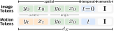
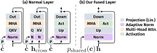
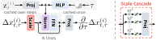
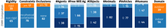
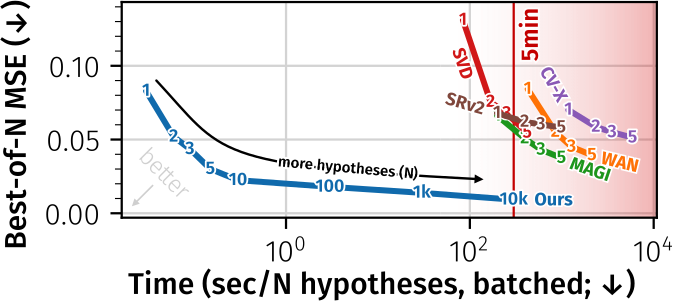
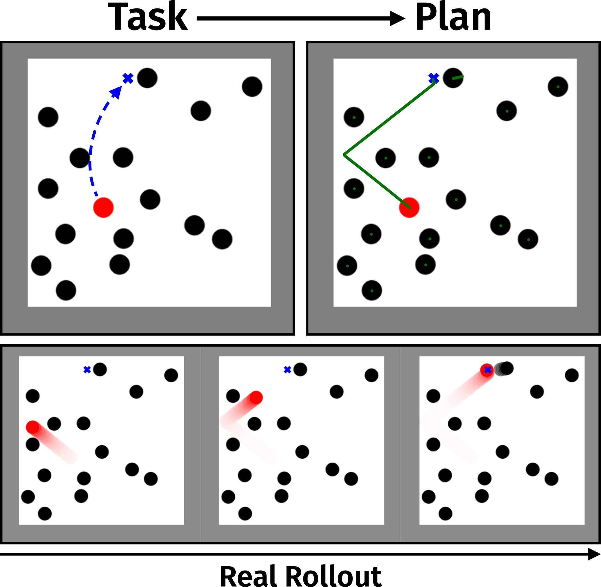

TL;DR
Instead of generating dense future video, we predict distributions over sparse point trajectories, step by step, from a single image. An autoregressive diffusion model with an efficiency-oriented architecture makes this orders of magnitude faster than video-based world models - fast enough to explore thousands of plausible futures and plan over them.
Method
We formulate future reasoning as autoregressive prediction over sparse point trajectories. Given a single image and a set of query points, the model factorizes the joint distribution over future motion causally - first over time, then over individual trajectories within each step. A lightweight flow-matching head captures the multi-modal distribution of next-step displacements, enabling fast sampling with KV-cache decoding.



OWM: Open-World Motion Benchmark
To evaluate open-world motion prediction, we introduce OWM - a benchmark of 95 diverse in-the-wild videos under static cameras. Each scene provides a reference frame, query points, and verified ground-truth trajectories spanning 2.5-6.5 seconds. We assess both accuracy (best-of-N) and search efficiency: given a fixed 5-minute wall-clock budget on a reference GPU, how many plausible futures can a method explore? We supplement OWM with physical diagnostics from Physics-IQ and Physion.


Results
Evaluation Setup
We compare against state-of-the-art open-weight video generation models. For video baselines, trajectories are extracted from generated frames using off-the-shelf point trackers.
- minADE ↓
- L2 distance of the closest hypothesis to ground truth. Lower is better.
- N=5
- 5 hypotheses per method, best scored.
- T=5min
- Fixed 5-minute GPU budget (equal compute); generate as many hypotheses as possible, best scored. Measures search efficiency. DNF = did not finish.
- (a) OWM
- Open-world motion (in-the-wild videos).
- (b) PhysicsIQ
- Physical plausibility in controlled solid-mechanics settings (Motamed et al., WACV 2026).
- (c) Physion
- Intuitive physics understanding benchmark (Bear et al., NeurIPS D&B 2021).
Open-World Motion & Physical Diagnostics
With only 5 samples, our approach - despite being orders of magnitude faster and over 10× smaller - matches the prediction accuracy of the best open-weight video generation models. Under the primary 5-minute budget, this efficiency advantage becomes decisive: most video models cannot even finish within the time limit, while ours generates thousands of hypotheses to find substantially more accurate predictions.
| Method | Params | Throughput | (a) OWM ↓ | (b) PhysicsIQ ↓ | (c) Physion ↓ | |||
|---|---|---|---|---|---|---|---|---|
| N=5 | T=5min | N=5 | T=5min | N=5 | T=5min | |||
| MAGI-1 | 4.5B | 0.3 / min | 0.037 | 0.066 | 0.126 | 0.169 | 0.061 | 0.081 |
| Wan2.2 I2V | 14B | 0.14 / min | 0.039 | DNF | 0.116 | DNF | 0.069 | DNF |
| CogVideoX 1.5 | 5B | 0.05 / min | 0.051 | DNF | 0.100 | DNF | 0.063 | DNF |
| SkyReels V2 (DF) | 1.3B | 0.3 / min | 0.058 | 0.068 | 0.128 | 0.137 | 0.069 | 0.084 |
| SVD 1.1 | 1.5B | 0.71 / min | 0.054 | 0.119 | 0.138 | 0.241 | 0.070 | 0.147 |
| Ours | 0.6B | 2,200 / min | 0.029 | 0.013 | 0.115 | 0.045 | 0.048 | 0.020 |

Downstream: Billiard Planning
The efficiency of our model enables a new capability: planning by exploring motion-space rollouts. Importantly, the model is completely task-agnostic - it is never trained for or made aware of any downstream planning objective; it simply predicts how the scene might evolve.
To isolate the model's suitability for planning from any influence of the planning algorithm, we deliberately use the simplest possible approach: pure random search over candidate actions. Initial velocities ("pokes") on the cue ball are sampled at random, the model rolls out many stochastic futures for each, and the action whose rollouts best satisfy the task objective is selected. Even with this naive planner, our approach achieves 78% accuracy - far above all dense video baselines (4-16%) and approaching the 84% of a ground-truth physics simulator oracle. A more sophisticated planning algorithm would likely yield substantially better results still.

| Method | Accuracy ↑ | Throughput (actions/min) |
|---|---|---|
| Simulator Oracle | 84% | 55,162 |
| Images-to-Video Diff. | 16% | 19.8 |
| AR Images-to-Video Diff. | 8% | 18.6 |
| Full Trajectory Diffusion | 8% | 160.8 |
| Flow Poke Transformer | 4% | 13,423 |
| Ours | 78% | 496 |
All methods use the same random-search planner to ensure a fair comparison that isolates world model quality from planning algorithm sophistication.
BibTeX
@inproceedings{baumann2026envisioning,
title = {Envisioning the Future, One Step at a Time},
author = {Stefan Andreas Baumann and Jannik Wiese and Tommaso Martorella and Mahdi M. Kalayeh and Bj{\"o}rn Ommer},
booktitle = {Proceedings of the IEEE/CVF Conference on Computer Vision and Pattern Recognition (CVPR)},
year = {2026}
}